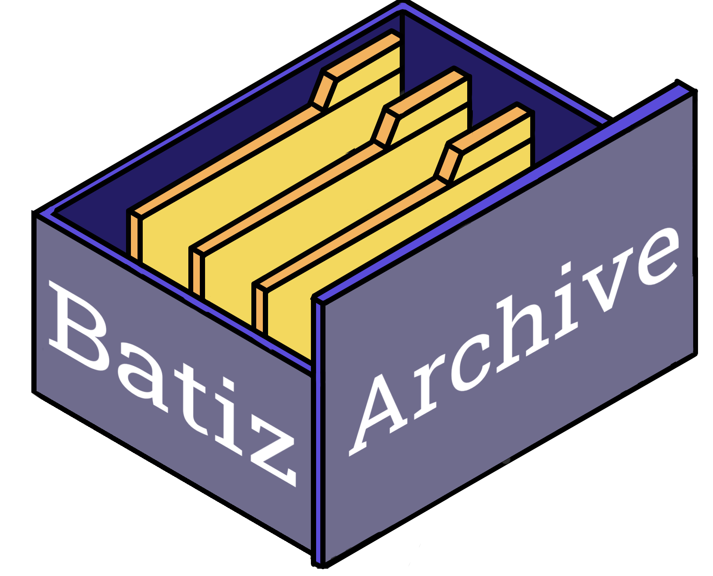

BatizArchive es un programa diseñado para facilitar a los estudiantes del CECYT 9 la visualización de proyectos previamente realizados en la Expo-Bátiz. Esta interfaz gráfica permite a los estudiantes explorar de manera fácil y rápida todos los proyectos presentados en ediciones anteriores, evitando la repetición de ideas y promoviendo la creatividad y la originalidad en las propuestas futuras.
Con BatizArchive, los estudiantes pueden acceder a una base de datos donde se encuentran almacenados todos los proyectos presentados en Expobatiz previamente organizados. De esta manera, los alumnos pueden buscar inspiración, investigar sobre temas específicos y conocer el trabajo de sus compañeros.
Infomación de BatizArchive
Proyectos por ODS
Tembién conocidos como Objetivos Mundiales, son los objetivos del desarrollo sostenible, implementados en la ONU como un plan de acción global para acabar con la pobreza, proteger el planeta y garantizar que todas las personas disfruten de paz y prosperidad.